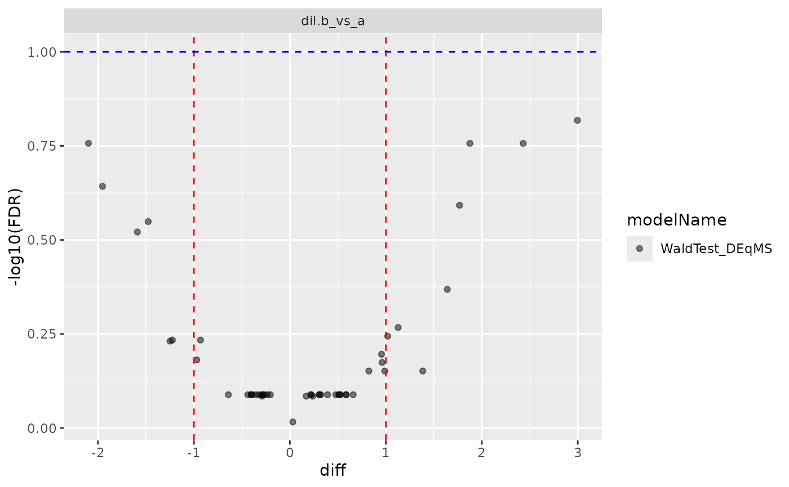

DEqMS count-dependent moderated contrasts
Source:R/ContrastsModeratedDEqMS.R
ContrastsModeratedDEqMS.RdDEqMS count-dependent moderated contrasts
DEqMS count-dependent moderated contrasts
Details
Decorator that wraps any Contrasts object and applies count-dependent
empirical Bayes variance shrinkage. Similar to ContrastsModerated
but the prior variance depends on the number of quantified peptides/PSMs
per protein: proteins with many peptides get less shrinkage, proteins with
few peptides get more.
See also
Other modelling:
AnovaExtractor,
Contrasts,
ContrastsDEqMSFacade,
ContrastsFirth,
ContrastsFirthFacade,
ContrastsLMFacade,
ContrastsLMImputeFacade,
ContrastsLMMissingFacade,
ContrastsLimma,
ContrastsLimmaFacade,
ContrastsLmerFacade,
ContrastsMissing,
ContrastsModerated,
ContrastsPlotter,
ContrastsRLMFacade,
ContrastsROPECA,
ContrastsROPECAFacade,
ContrastsTable,
INTERNAL_FUNCTIONS_BY_FAMILY,
LR_test(),
Model,
ModelFirth,
ModelLimma,
StrategyLM,
StrategyLimma,
StrategyLmer,
StrategyLogistf,
StrategyRLM,
build_contrast_analysis(),
build_model(),
build_model_glm_peptide(),
build_model_glm_protein(),
build_model_impute(),
build_model_limma(),
build_model_logistf(),
compute_borrowed_variance(),
compute_contrast(),
compute_lmer_contrast(),
contrasts_fisher_exact(),
get_anova_df(),
get_complete_model_fit(),
get_p_values_pbeta(),
group_label(),
impute_refit_singular(),
isSingular_lm(),
linfct_all_possible_contrasts(),
linfct_factors_contrasts(),
linfct_from_model(),
linfct_matrix_contrasts(),
merge_contrasts_results(),
model_analyse(),
model_summary(),
moderated_p_deqms(),
moderated_p_deqms_long(),
moderated_p_limma(),
moderated_p_limma_long(),
new_lm_imputed(),
pivot_model_contrasts_2_Wide(),
plot_lmer_peptide_predictions(),
sim_build_models_lm(),
sim_build_models_lmer(),
sim_build_models_logistf(),
sim_make_model_lm(),
sim_make_model_lmer(),
strategy_limma(),
strategy_logistf(),
summary_ROPECA_median_p.scaled()
Super class
prolfqua::ContrastsInterface -> ContrastsModeratedDEqMS
Public fields
ContrastClass implementing the Contrast interface
count_dfdata.frame with subject_Id + count column
count_columnname of the count column in count_df
loess_spanspan parameter for LOESS fit
modelNamename of model
subject_Idcolumns with subject_Id (proteinID)
p.adjustfunction to adjust p-values
Methods
Method new()
initialize
Usage
ContrastsModeratedDEqMS$new(
Contrast,
count_df,
count_column,
loess_span = 0.75,
modelName = paste0(Contrast$modelName, "_DEqMS"),
p.adjust = prolfqua::adjust_p_values
)Arguments
Contrastclass implementing the ContrastInterface
count_dfdata.frame with subject_Id columns and a count column
count_columnname of the count column in count_df
loess_spanspan for LOESS variance fit (default 0.75)
modelNamename of the model
p.adjustfunction to adjust p-values - default BH
Method get_Plotter()
get ContrastsPlotter
Method to_wide()
convert to wide format
Usage
ContrastsModeratedDEqMS$to_wide(columns = c("p.value", "FDR", "statistic"))Examples
istar <- sim_lfq_data_protein_config(Nprot = 50)
#> creating sampleName from fileName column
#> completing cases
#> completing cases done
#> setup done
protIntensity <- istar$data
config <- istar$config
lProt <- LFQData$new(protIntensity, config)
lProt$rename_response("transformedIntensity")
modelFunction <-
strategy_lm("transformedIntensity ~ group_")
mod <- build_model(
lProt,
modelFunction)
#> Joining with `by = join_by(protein_Id)`
Contr <- c("dil.b_vs_a" = "group_A - group_Ctrl")
contrast <- prolfqua::Contrasts$new(mod, Contr)
# Build count_df from config
count_df <- dplyr::select(protIntensity,
dplyr::all_of(c(config$hierarchy_keys_depth(), "nr_peptides"))) |>
dplyr::distinct()
deqms <- ContrastsModeratedDEqMS$new(contrast,
count_df = count_df,
count_column = "nr_peptides")
bb <- deqms$get_contrasts()
#> determine linear functions:
#> get_contrasts -> contrasts_linfct
#> contrasts_linfct
#> Joining with `by = join_by(protein_Id, contrast)`
#> Warning: moderated_p_deqms_long: warnings in 1/1 groups. contrast=dil.b_vs_a (pseudoinverse used at 1; neighborhood radius 1; reciprocal condition number 2.362e-17)
stopifnot(all(c("diff", "p.value", "FDR", "sigma") %in% colnames(bb)))
# Merge with ContrastsMissing
csi <- ContrastsMissing$new(lProt, contrasts = Contr)
merged <- merge_contrasts_results(deqms, csi)
#> Warning: moderated_p_deqms_long: warnings in 1/1 groups. contrast=dil.b_vs_a (pseudoinverse used at 1; neighborhood radius 1; reciprocal condition number 2.362e-17)
#> completing cases
#> dil.b_vs_a=group_A - group_Ctrl
#> dil.b_vs_a=group_A - group_Ctrl
#> dil.b_vs_a=group_A - group_Ctrl
#> Joining with `by = join_by(protein_Id, contrast)`
#> Joining with `by = join_by(protein_Id, contrast)`
cs <- deqms$get_contrast_sides()
cslf <- deqms$get_linfct()
ctrwide <- deqms$to_wide()
#> Warning: moderated_p_deqms_long: warnings in 1/1 groups. contrast=dil.b_vs_a (pseudoinverse used at 1; neighborhood radius 1; reciprocal condition number 2.362e-17)
cp <- deqms$get_Plotter()
#> Warning: moderated_p_deqms_long: warnings in 1/1 groups. contrast=dil.b_vs_a (pseudoinverse used at 1; neighborhood radius 1; reciprocal condition number 2.362e-17)
cp$volcano()
#> $FDR

#>